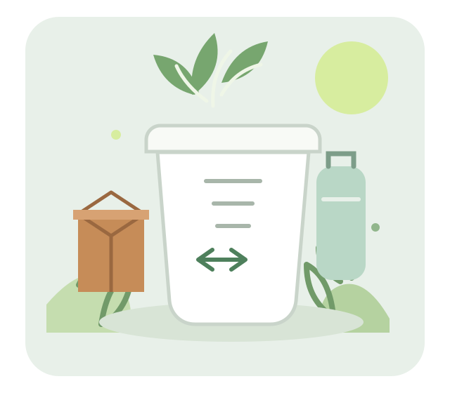

Captura
Toma una foto o selecciona una imagen nítida del residuo que quieres revisar.
Visión artificial para un planeta mejor
Una herramienta educativa que reconoce residuos aprovechables y te ayuda a decidir dónde depositarlos.

De imagen a acción
EcoVision conecta un modelo de aprendizaje profundo con una experiencia práctica y directa.
Toma una foto o selecciona una imagen nítida del residuo que quieres revisar.
El modelo Keras analiza la imagen y estima cuál de las cuatro clases reconoce.
Consulta la recomendación y deposita el material limpio y seco en la caneca correspondiente.
Lo que reconoce
En Colombia, estos residuos aprovechables se separan en la caneca blanca cuando están limpios y secos.
Envases y empaques aprovechables, vacíos y enjuagados.
Caneca blancaHojas y cajas secas, sin restos de comida ni grasa.
Caneca blancaLatas y envases metálicos vacíos y limpios.
Caneca blancaBotellas y frascos limpios; manipúlalos con cuidado.
Caneca blancaProyecto académico · Deep Learning
Una aplicación con TensorFlow, Keras y Streamlit, organizada por capas y preparada para desplegarse desde un repositorio público.